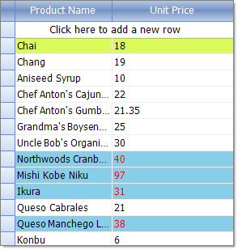

Conditional Formatting Rows
Cells and rows can be styled based on data conditions using the ConditionalFormattingObject. Setup the condition in the constructor for the ConditionalFormattingObject. The constructor parameters are:
The name of the condition.
A ConditionTypes enumeration value: Equal, NotEqual, StartsWith, EndsWith, Contains, DoesNotContain, Greater, GreaterOrEqual, Less, LessOrEqual, Between, NotBetween.
A string for the first value used to test the condition.
A string for the second value used to test the condition.
An "ApplyToRow" boolean that if true allows you to format the entire row that the cell appears in.
The ConditionalFormattingObject also contains formatting properties for the cell, row and text alignment.
CellBackColor sets the background color for the cell.
CellForeColor sets the cell text font color.
CellFont sets the cell text font.
RowBackColor sets the background color for the entire row that the cell appears in.
RowForeColor sets the cell text font color for the entire row that the cell appears in.
RowFont sets the cell text font for the entire row that the cell appears in.
TextAlignment is a ContentAlignment enumeration value that can be TopLeft, TopCenter, TopRight, MiddleLeft, MiddleCenter, MiddleRight, BottomLeft, BottomCenter and BottomRight.
Conditional Formatting Rows
This example looks for the same condition as the cell formatting example. The difference is that the last parameter ("ApplyToRow") passed to the ConditionalFormattingObject__is set to true, allowing the __RowBackColor property to be recognized. 
[C#] Conditional formatting rows
ConditionalFormattingObject obj = new ConditionalFormattingObject("MyCondition", ConditionTypes.Greater, "30", "", true);
obj.CellForeColor = Color.Red;
obj.RowBackColor = Color.SkyBlue;
this.radGridView1.Columns["UnitPrice"].ConditionalFormattingObjectList.Add(obj);
[VB.NET] Conditional formatting rows
Dim obj = New ConditionalFormattingObject("MyCondition", ConditionTypes.Greater, "30", "", True)
obj.CellForeColor = Color.Red
obj.RowBackColor = Color.SkyBlue
Me.RadGridView1.Columns("Unit Price").ConditionalFormattingObjectList.Add(obj)